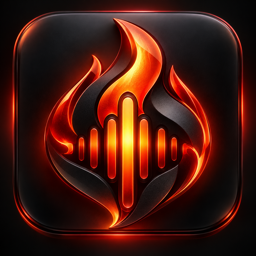

Two-deck mixing
Play two local tracks with waveforms, EQ, tempo, volume, and a smooth crossfader.

Soundblast DJ DownloadDesktop DJ software
Two decks, AI-assisted samples, live effects, and MIDI control in one focused workspace.
Download Soundblast DJ ↓macOS 14+ · Apple Silicon
Soundblast DJ
Soundblast DJ keeps your music local and your controls close. Load two tracks, shape the mix, generate playable samples, add live effects, and control the app from your keyboard or MIDI hardware.
Features
Play two local tracks with waveforms, EQ, tempo, volume, and a smooth crossfader.
Separate vocals and instruments, then turn the track into immediately playable beat pads.
Record performance loops and trigger live effects without leaving the main deck.
Learn hardware controls once and keep your custom mappings for future sessions.
Download
Free download. No account required.